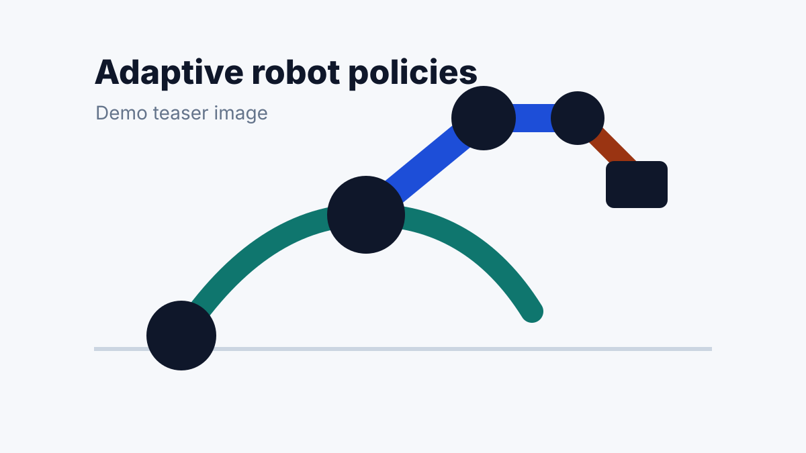

Adaptive Robot Policies from Sparse Demonstrations
Alex Researcher, Taylor Demo, and Morgan Lee
International Conference on Robotics and Automation
This demo paper studies how a robot policy can adapt from a small number of demonstrations while preserving task-relevant visual attention. Replace this abstract with the real paper abstract or leave it blank until the final version is public.